Freja
Hedegaard
På mit første semester som multimediedesigner, har jeg opnået flere færdigheder inden for webudvikling. Jeg har arbejdet med design, indholdsproduktion, kodning og brugervenlighed. Mine kompetencer er blevet udvidet for hvert tema i løbet af semestret. Jeg er nu i stand til at arbejde på et projekt helt fra bunden ved hjælp af de nedstående kompetencer.
Programmer
- Visual Studio Code
- Filezilla
- Figma
- Adobe Illustrator
- Adobe After Effects
- Adobe Premiere Pro
Kompetencer inden for webudvikling
- Kode responsive hjemmesider med HTML.
- Style hjemmesider med CSS og implementere CSS-animationer.
- Kode dynamiske hjemmesider med JavaScript.
- Designe illustrationer med Adobe Illustrator.
- Oprette vektorgrafik med Adobe After Effects.
- Redigere videoer med Adobe Premiere Pro.
Kompetencer inden for processer
- Kendskab til forskellige testmetoder: Tænke højt, BERT, Lighthouse og fem-sekunders-test.
- Erfaring med Scrum-metoden
- Vigtigheden af at lave og følge en tidsplan.
Kompetencer indenfor design
- Oprette wireframes og prototyper til design.
- Kendskab til forskellige designprincipper.
- Udvikle styletiles og moodboards.
- Udvikle brugervenlige designs.